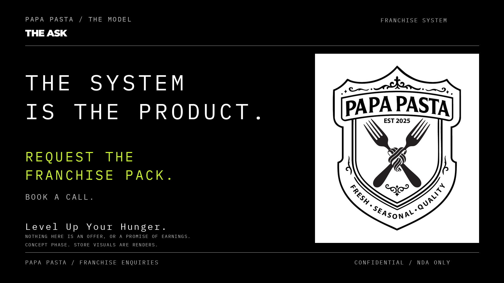
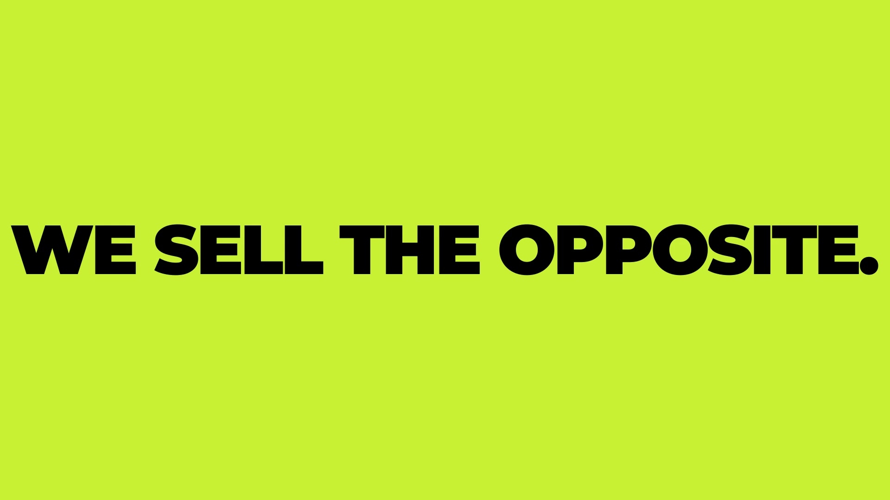

One brand pack, one set of facts, one claims gate. Three agents each cut their own film from it — different arguments, different registers, same spine. This page is the comparison sheet: what each film argues, what all three state, and what none of them will say.

The system is the product. Numbers as protagonist, mono type, one accent. The franchise read as a machine that produces the same bowl in every suburb.

The brand is the product, and the brand is local. Six chapters, one accent each, the crest never changing. Type, food macro and store renders, cut hard on a 100 BPM bed.
Belonging. One street, one store, one colour, one night. Voiceover-led, documentary warm, the network arriving only at the end as a consequence.
Claude Code hit its five-hour account limit at 08:30 and again at 11:10. The build is armed to fire on its own the moment the window resets.
The spine is fixed. Every number below comes from the brand pack, with its source named in the pack. No film infers, averages or extrapolates one.
| Claim | What the films state | Basis |
|---|---|---|
| Product | Dough made in store today · sauce from the central kitchen · boiled to order 90–180 s · under six minutes as a target, not a promise | Product truth |
| Menu | Nine signatures, one build-your-own · R65–R99 · 36 seasonal drops over three years | Published menu |
| Volume | 174 servings per store per day — labelled as a modelled input wherever it appears | Store model |
| Territory | 65 zones · 9 provinces · 8 metros · 24 launch zones · exclusive, one operator each | Network plan |
| The deal | 15-year licence · flat fees, in the agreement · 2–5 stores per zone · all committed stores open within 24–36 months of signing · 4-week Academy | Franchise sale model |
| The ask | Request the franchise pack. The numbers live in the pack, not in the film. | House rule |
| Test | What it means | Status |
|---|---|---|
| Plays | 1800 / 2250 frames, 60.000 s and 75.000 s, 1920×1080, 30 fps, audio present | Pass — both |
| Silent-readable | Every idea is burned into the frame; nothing depends on a voice | Pass — by construction |
| Brand fidelity | Crest intact, brand hexes only, Montserrat display, Plex Mono for system text | Pass — both |
| Fees and money | Zero Tier B or C figures on screen | Pass — after re-render |
| Disclosure | Concept-phase line on every render frame and both end cards | Missed first time. Added, re-rendered, verified frame by frame. |
| Banned words | nonna · authentic · homemade · rustic · traditional · family · artisanal | Zero hits — both |
| Loudness | −16 LUFS, true peak under −1 dBTP | −16.07 and −16.15 LUFS |